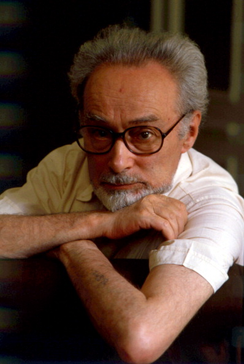

Mi-am propus să ofer în fiecare zi conținut nou: o recomandare de carte, de melodie, o biografie de autor, un citat, o glumă... Astăzi este rîndul:

Chimistul și scriitorul italian Primo Levi (1919 — 1987), supraviețuitor al lagărului de exterminare de la Auschwitz, este autorul unor cărți remarcabile de memorii, într-o abordare pe care o găsesc deosebită.Prima dintre aceste cărți, tradusă în română cu titlul Mai este acesta un om?, a început să fie scrisă încă de cînd Levi era prizonier. El povestește cum a distrus notițele pe care și le luase chiar înainte de a fi eliberat (deoarece l-ar fi costat viața dacă ar fi fost găsite), dar a început să le scrie deoarece remarcă faptul că majoritatea prizonierilor aveau această necesitate de a povesti. Chiar dacă nu îi asculta nimeni sau vorbeau între ei, important era să poată relata cuiva ce se întîmplă. Apoi, după eliberare, Levi a scris în continuu, avînd amintirile proaspete, și a publicat cartea în 1947.
Pe lîngă cartea de mai sus, Levi a mai scris două alte cărți de memorii, cu titlurile în engleză The Truce și The Periodic Table. În prima dintre acestea, el povestește cum s-a readaptat la viața de după lagăr și cum a călătorit pînă înapoi în Torino ocolind mii de kilometri și traversînd numeroase țări. A doua este o autobiografie scrisă într-un mod original, titrîndu-și capitolele cu numele cîte unui element chimic. În această autobiografie sînt relatate atît amintiri din lagăr, cît și din viața de dinainte și de după lagăr.
Remarcabil, din punctul meu de vedere, în ce privește cărțile de memorii ale lui Levi, este faptul că, așa cum recunoaște autorul, au fost scrise strict ca niște mărturii de la fața locului. Obiectivul pe care și l-a stabilit cînd a început să scrie a fost să caute urme de umanitate în cei din jurul său, fie ei gărzi naziste sau prizonieri, după cum reiese și din titlu. Astfel, cu o luciditate deosebită și aproape fără emoție transmisă direct, relatează detalii macabre, dureroase, sfîșietoare chiar, încercînd să înțeleagă unde mai este calitatea de om din subiectul relatării. Fie că este vorba despre brutalitatea gărzilor, fie despre decăderea, obiectificarea și animalizarea prizonierilor, Levi încearcă întîi de toate să înțeleagă ce atribut al unei ființe umane a mai rămas de partea celui despre care se vorbește. Întrebat de cititori de ce nu relatează și despre torturi mortale, despre camerele de gazare și alte orori binecunoscute ale lagărului, Levi reiterează faptul că și-a propus să prezinte strict ceea ce a văzut; prezentînd crematoriile sau alte orori la care nu a fost martor, nu ar fi făcut decît să reia povestirile altora, pe care tot cei care le-au trăit direct sau studiat le prezintă mai bine. Astfel că el s-a rezumat la a istorisi cazurile trăite direct, în care este, în cuvintele sale, doar martor, invitîndu-i pe cititori să fie avocați sau chiar judecători.
În afară de cărțile de memorii, Primo Levi a scris și poezii și romane cu o tentă științifico-fantastică, fiind, totodată și un chimist remarcabil. Dar, după cum recunoaște el însuși, nu ar fi ajuns să scrie, să se preocupe realmente de literatură, de probleme de stil, limbă, exprimare, narațiune dacă nu ar fi fost experiența de la Auschwitz. Operele sale (literare) complete, pentru prima dată traduse integral în engleză în 2015 și editate împreună cu Toni Morrison și Ann Golstein (cunoscută pentru traducerile din Elena Ferrante) se găsesc și în România.